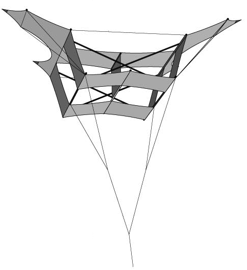

The one-piece Cody was designed by Ton Vinken, as a way to construct a Cody kite out of a single piece of material. The one-piece Cody kite is in many senses similar to the traditional Cody. However, it differs in the upper planes of the front and back and the lower planes of the central boxes.

Using the folding pattern from VliegerBlad.nl, I constructed a blueprint of the kite in a Mathematica notebook.
The blue stripes indicate the pockets for the sticks. This design requires four T-junctions located at the red dots. The thick black lines indicate loops of string through which the sticks pass. I have reinforced the structure at the endpoints of the sticks with some additional fabric. The results in a very beautiful and sturdy Cody kite which flies very well in mild winds.